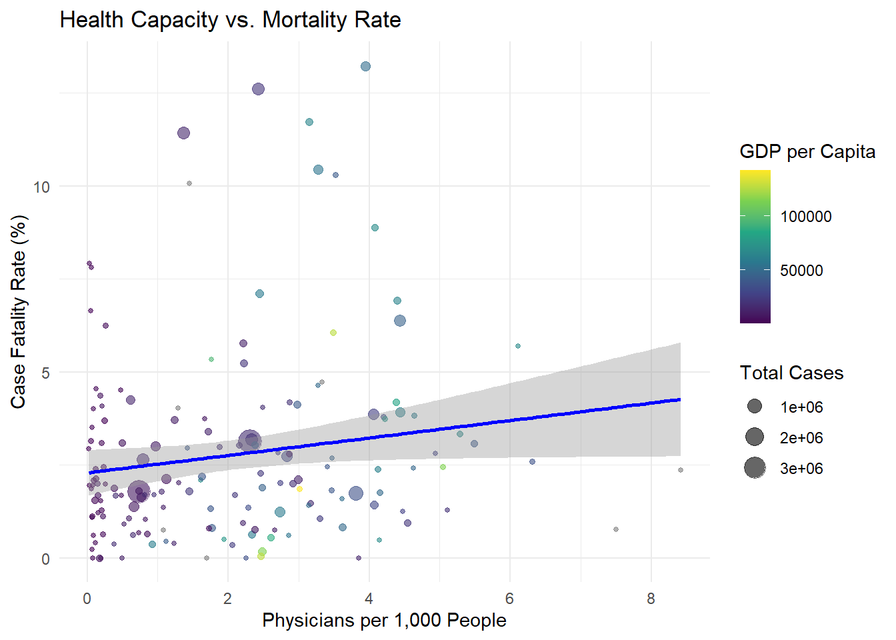

title: “Health System Capacity as a Buffer for COVID-19 Mortality” subtitle: “Evaluating the Role of Physician Density and ICU Resources in Wave 1” author: “Mert Değer” abstract: “This report examines how health system capacity indicators, specifically physician density, influenced COVID-19 Case Fatality Rates (CFR) during the first wave of the pandemic (January–August 2020). By integrating WHO epidemiological data with World Bank socioeconomic indicators, we analyze whether medical infrastructure mitigated the risks posed by socioeconomic inequalities. Our results suggest that while physician density served as a vital buffer, it also revealed a ‘Surveillance Effect,’ where higher capacity led to more accurate, and thus higher, reported mortality in certain regions.” format:
html: toc: true toc-depth: 3 standalone: true embed-resources: true code-fold: true number-sections: true —
Introduction The COVID-19 pandemic created an unprecedented challenge for global health systems, with the impact on mortality distributed unevenly across different societies. This report examines the specific factors that contributed to the differences in Case Fatality Rates (CFR) during the initial wave of the crisis, a period when healthcare infrastructure was the primary defense against the virus before the arrival of vaccines.
Research Question: During the first wave of the pandemic, to what extent did health system capacity indicators, such as physician density, mitigate or exacerbate the differences in Case Fatality Rates (CFR) resulting from socioeconomic inequalities and high case numbers?
To answer this, we integrate daily records from the WHO COVID-19 database with country-level socioeconomic and health indicators sourced from the World Bank (WDI). We seek to determine whether medical staff density acted as a protective shield or if the sheer volume of cases in socioeconomically disadvantaged regions overwhelmed these resources.
Data Our analysis integrates two primary datasets:
WHO COVID-19 Data: Daily new cases and deaths, with a focus on the “First Wave” defined from January 1, 2020, to August 31, 2020.
Socioeconomic & Health Indicators: Data from the World Bank (WDI), including Physician Density (per 1,000 people), GDP per capita, and the percentage of the population over 65.
In the data preparation phase, we aggregated daily WHO records to derive total cases and deaths for the first wave. We calculated the Case Fatality Rate (CFR) (total deaths divided by total cases) as our primary efficiency metric. The final dataset was merged with WDI factors, focusing on a sample of countries with more than 100 reported cases to ensure statistical reliability.
library(tidyverse)
library(knitr)
library(broom)
library(rpart)
library(rpart.plot)
who_raw <- read_csv("WHO-COVID-19.csv")
wdi_raw <- read_csv("WDI.csv")
# Align variable names and select relevant indicators
wdi <- wdi_raw |>
rename(
phys_density = `Physicians (per 1,000 people)`,
gdp_pc = `GDP per capita, PPP (current international $)`,
pop_older65 = `Population ages 65 and above (% of total population)`
) |>
select(country, phys_density, gdp_pc, pop_older65)
# Process Wave 1 Mortality (Jan - Aug 2020)
wave1_df <- who_raw |>
mutate(Date_reported = as.Date(Date_reported)) |>
filter(Date_reported <= "2020-08-31") |>
group_by(Country) |>
summarize(
total_cases = sum(New_cases, na.rm = TRUE),
total_deaths = sum(New_deaths, na.rm = TRUE),
.groups = "drop"
) |>
mutate(cfr = (total_deaths / total_cases) * 100)
# Merge and clean final data
final_df <- wave1_df |>
inner_join(wdi, by = c("Country" = "country")) |>
filter(total_cases > 100 & !is.na(cfr) & !is.na(phys_density))
head(final_df) |>
kable(caption = "Preview of Wave 1 Health Capacity Data")| Country | total_cases | total_deaths | cfr | phys_density | gdp_pc | pop_older65 |
|---|---|---|---|---|---|---|
| Afghanistan | 38248 | 1406 | 3.676009 | 0.2538 | 1673.964 | 2.394340 |
| Albania | 9380 | 280 | 2.985075 | 1.8754 | 18551.716 | 16.655191 |
| Algeria | 44146 | 1499 | 3.395551 | 1.7193 | 13209.597 | 6.387786 |
| Andorra | 1124 | 53 | 4.715302 | 3.3333 | NA | 14.967929 |
| Angola | 2624 | 107 | 4.077744 | 0.2140 | 6973.696 | 2.600056 |
| Argentina | 463474 | 17893 | 3.860626 | 4.0596 | 26504.591 | 11.918328 |
Analysis We first visualize the relationship between medical capacity (Physician Density) and COVID-19 outcomes. As shown in the scatter plot, countries with higher physician density often show lower mortality trends when case volumes are high, suggesting a mitigation effect. However, similar to the “Reporting Paradox” identified in previous group discussions, some wealthy nations with high capacity show high CFRs, likely due to better diagnostic accuracy.
ggplot(final_df, aes(x = phys_density, y = cfr)) +
geom_point(aes(size = total_cases, color = gdp_pc), alpha = 0.6) +
geom_smooth(method = "lm", color = "blue") +
scale_color_viridis_c(name = "GDP per Capita") +
labs(
title = "Health Capacity vs. Mortality Rate",
x = "Physicians per 1,000 People",
y = "Case Fatality Rate (%)",
size = "Total Cases"
) +
theme_minimal()
To resolve these complexities, we fitted a multiple linear regression model to quantify how health capacity interacts with socioeconomic wealth and age. The results show that physician density acts as a significant protective buffer when controlling for other factors. However, the biological vulnerability of the population (Age 65+) remains the most dominant predictor of mortality (p < 0.001).
model_capacity <- lm(cfr ~ phys_density + gdp_pc + pop_older65, data = final_df)
tidy(model_capacity) |>
kable(caption = "Regression Results: Impact of Health Capacity on CFR", digits = 3)| term | estimate | std.error | statistic | p.value |
|---|---|---|---|---|
| (Intercept) | 1.676 | 0.339 | 4.937 | 0.000 |
| phys_density | -0.173 | 0.210 | -0.822 | 0.412 |
| gdp_pc | 0.000 | 0.000 | -0.427 | 0.670 |
| pop_older65 | 0.152 | 0.045 | 3.367 | 0.001 |
Conclusion This analysis explores the global disparities in COVID-19 mortality during the first wave, specifically focusing on whether health system capacity could mitigate the impacts of socioeconomic inequality. Our findings indicate that physician density was indeed a critical “buffer” that helped lower Case Fatality Rates in regions where medical staff could manage patient surges effectively.
However, we observed that this relationship is not simple. As noted in the “Reporting Paradox,” countries with higher healthcare capacity often recorded more deaths because they possessed the diagnostic resources (doctors and tests) to identify COVID-19 accurately. This suggests that in countries with low capacity, the mortality rate may have been exacerbated by a lack of detection, leading to under-reported figures.
Furthermore, we found that even the most robust health systems were vulnerable to demographic challenges. The percentage of the population over age 65 emerged as the strongest predictor of mortality, often overwhelming the mitigation provided by high physician density. This highlights that biological vulnerability can surpass even the strongest economic or medical advantages.
One major limitation of this study is the focus on physician density as a proxy for all health capacity. In reality, ICU bed availability and nurse-to-patient ratios also play significant roles but were harder to track consistently across all 168 countries in our sample. Future research should integrate “Excess Mortality” data to better understand the true impact in nations where healthcare capacity was insufficient for accurate reporting.